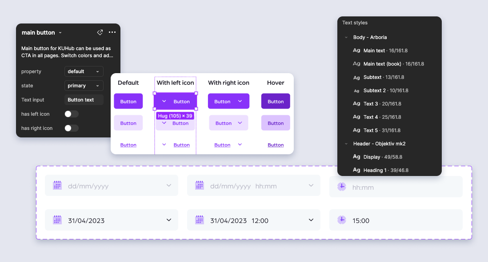

Portfolio Details
Project Information
- Category: Design Systems, Component Libraries, Reusable Components, Responsive Design, UI Patterns, Scalable Design
- Client: Koç University
- Project URL: Figma
Project Overview
KUHub is Koç University's new digital platform, designed to unify internal services for students, faculty, and staff. To support its development, a scalable and consistent UI Kit was essential for ensuring design alignment and efficient handoff between designers and developers. This project aimed to establish the visual foundation and reusable components needed to streamline the platform’s growth and improve the user and dev experience across applications.
Project Goal
Create a comprehensive UI Kit using the Metronic framework to standardise design practices and improve consistency across internal applications.
My Role
I led the design of the UI Kit, defining reusable components and visual styles based on the Metronic framework. I collaborated with the UX/UI team to ensure alignment across products, and documented usage guidelines to support scalability and developer handoff.
This UI Kit is a design system that outlines the visual and interactive elements used in the KUHub project, ensuring consistency and efficiency across the design and development process
UX/UI Methodologies & Techniques – KUHub UI Kit
Research & Discovery
Component-level UX analysis based on developer needs and existing inconsistencies
Evaluation of current UI patterns across KUHub for scalability and usability
System Design
UI design of scalable components following atomic design principles
Creation of a consistent visual language through a comprehensive style guide
Pattern library development to unify the look and behaviour of internal applications
Collaboration & Documentation
Cross-functional design feedback loops with developers and fellow designers
Figma documentation with usage guidelines to support adoption and maintenance
Iterative updates based on implementation feedback
Testing & Iteration
Internal usability testing of individual components and patterns
Accessibility testing to ensure compliance with WCAG 2.1 standards
Feedback loops from both designers and developers
Iterative updates based on real-world implementation feedback
Refining components for better performance and scalability
Key Metrics
The Challenge
The KUHub project had scattered designs without an established design systems documentation. Every change and addition had to be made manually.
I needed to: Create master components on Figma, Gather use cases and create components, Establish style guides, Ensure design consistency across pages.
The Benefits
One source for all components, patterns, and styles.
Consistent design across pages.
Ability to replicate designs quickly with pre-made components and elements.
Reducing work time for designers, product owners and developers.
The Impact
The KUHub UI Kit reduced design inconsistencies across applications and improved designer–developer alignment. It significantly cut down UI design time and provided a reliable foundation for future updates, supporting the scalability of the platform.
The Approach
I started creating a style guide from the previous designs.
I researched industry standards and other design systems and UI kits to create a concise system. With clear rules and documentation, I established new styles. I then implemented the new rules based on existing files on Figma.
My UX designer teammates helped me with the framework and documentation. Designers and developers gave feedback on how I could increase their usage of the UI Kit.
UI Kit consists of
- In-page annotations explaining the use of tools.
- Brand Styles: colouring, typography, logos
- Components: modular elements like buttons, indicators, inputs etc.
- Accessibility Tool: explanation of rules and usage of the tool.
- Visual Catalog: illustration and visual used in the project
- Icons: set of icons to be used in the project
What I learned
As the lead designer on this end-to-end UI Kit project, I deepened my expertise in design systems and their lifecycle. I structured scalable components using atomic design principles and maintained design consistency across multiple applications. I led the documentation process to ensure clear, reusable UI patterns. Through close collaboration with developers, I reinforced the importance of tokenisation, streamlined communication, and establishing a sustainable maintenance workflow.